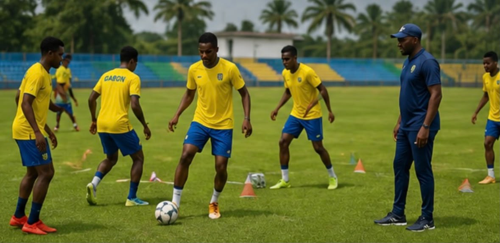
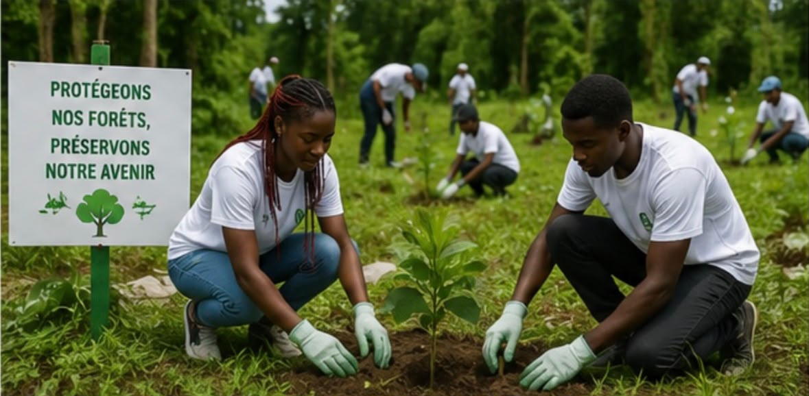

Ouverture d'un nouveau centre numérique
Date : 17 juillet 2026
Un nouveau centre numérique a été inauguré à Libreville afin de favoriser la formation des jeunes aux métiers du numérique.
Lire la suiteDate : 17 juillet 2026
Un nouveau centre numérique a été inauguré à Libreville afin de favoriser la formation des jeunes aux métiers du numérique.
Lire la suiteDate : 16 juillet 2026

Les équipes nationales poursuivent leur préparation en vue des prochaines compétitions africaines.
Lire la suiteDate : 15 juillet 2026

Plusieurs campagnes de sensibilisation sont organisées pour protéger les forêts et la biodiversité du Gabon.
Lire la suite